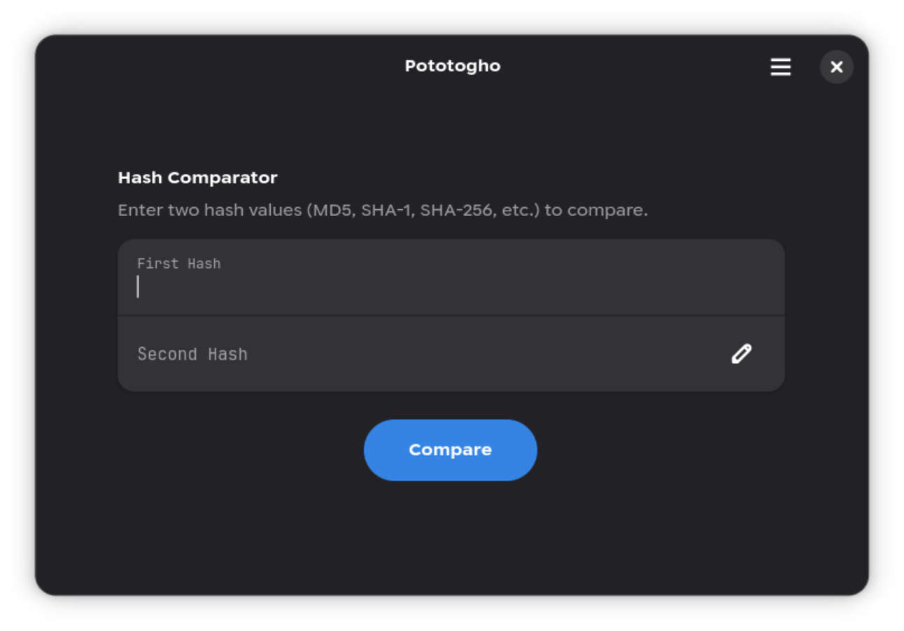

Verify hashes with native GNOME simplicity.
Pototogho is a fast, distraction-free cryptographic hash comparator crafted with GTK4 and Libadwaita—written 100% in Rust with zero XML UI overhead.

Designed for the GNOME Desktop
Focused on speed, native integration, and clean architecture from backend to UI.
100% Pure Rust
Both application logic and widget hierarchy are constructed
directly in Rust using gtk4 and
libadwaita without .ui XML files.
Smart Normalization
Automatically trims trailing spaces or newlines from clipboard pastes and performs case-insensitive comparisons across MD5, SHA-1, SHA-256, and SHA-512.
Adaptive Libadwaita UI
Follows GNOME Human Interface Guidelines with responsive
AdwClamp layouts, system dark mode support, and
keyboard shortcuts.
Flatpak Sandboxed
Targets the GNOME 50 Flatpak runtime for reliable, isolated distribution with zero network permissions and instant startup.
Build & Install
Run Pototogho via Flatpak or build directly from source using GNOME Builder and Meson.
Install Flatpak Bundle
Install the exported Flatpak package locally for your user account:
flatpak install --user dev.labambangpunto.pototogho.flatpak flatpak run dev.labambangpunto.pototogho
Build from Source
Open the repository in GNOME Builder 50+ and
press Ctrl+F5, or compile with Meson:
git clone https://github.com/labambangpunto/pototogho.git cd pototogho meson setup _build --prefix=/usr/local ninja -C _build install